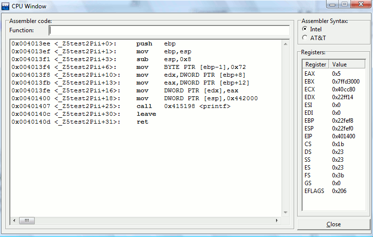

wxDev-C++ provides a CPU window to expert developers who want access to
the status of CPU registers and instructions.
To
show the CPU window, wait for a breakpoint or interruption to raise in
your program and go to the Debug menu, then click CPU Window. The
following dialog will appear:

On
the left, you can find the assembler instructions of the current
function. You can display the assembler code of any other function by
typing its name in the Function field, then pressing the Enter key. You
can also select the syntax of the assembler instructions: AT&T
or
Intel.
On the right, are the contents of the CPU registers.